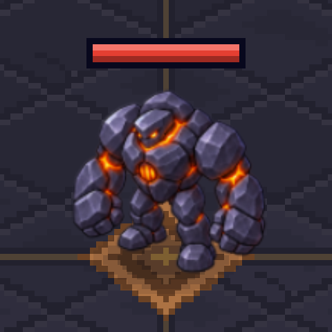
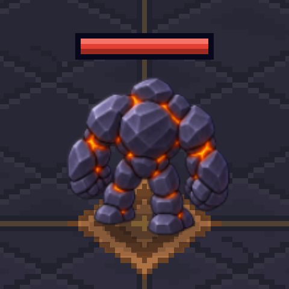
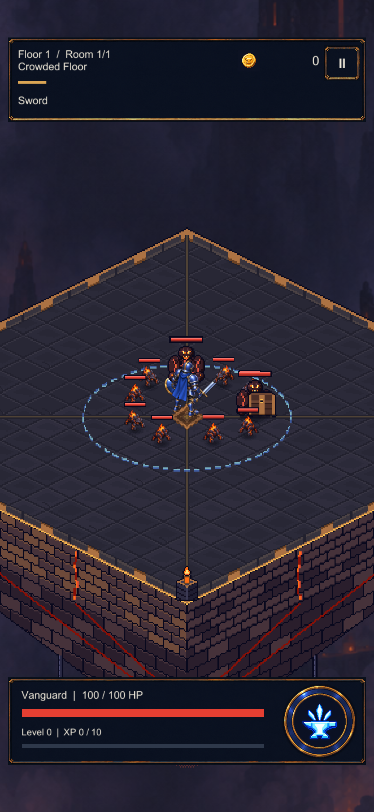
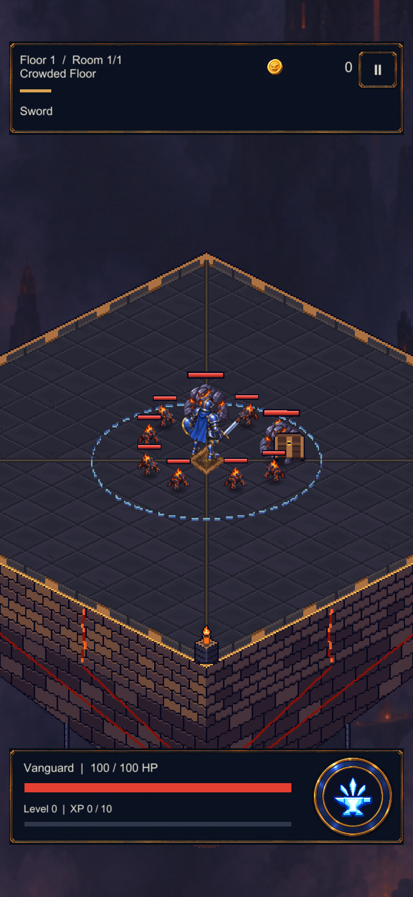
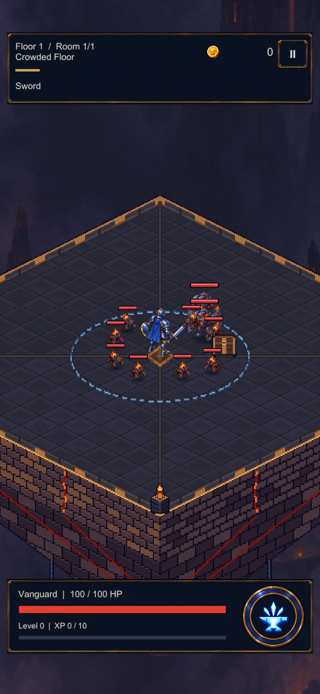

A heavy step. A deliberate strike.
Six keyposes per view, registered at one scale and sampled in the real Unity room. Inspect the pose cuts, planted stance and close-pair overlap before runtime integration.
Actual Unity renders · isolated staging · not installedRegistered pose comparison
The same source scale, canvas and pivot for every frame. Preview timing is illustrative.
Front · cool stone, visible furnace

Rear · closed basalt back

Walk: contact A → idle → contact B → idle. Idle is a temporary passing pose. Attack: idle → windup → strike → recovery → idle. These cuts are animation blocking, not a completed gait or the game's current attack timeline. Mirroring is a visual comparison only.
Same room, before and after
Current Grunts
{kind=link}

Candidate Grunts
{kind=link}

Two Grunts + eight runtime Mites + the runtime Vanguard. Existing bars, floor, lighting, camera and contact shadows retained. The scene is frozen; these are not live gameplay or phone captures.
Keep the overlap visible
{kind=link}

The two roots are manually staged .45 projected units apart in depth. This exposes sprite overlap; it does not simulate the current enemy separation rules.
What is ready — and what still needs work
Ready to review
Alternating contact poses; a corrected same-arm windup/strike; front/rear material continuity; one shared scale and pivot; twelve reduced samples in Unity with real bars and floor contact.
Before it enters combat
Refine the rear direction, foot contacts and changing stone volumes. Add proper passing poses, hit/death and shared imports. Existing attacks deal damage immediately: this preview's windup is not a new gameplay delay or telegraph.
{kind=link}
{kind=link}